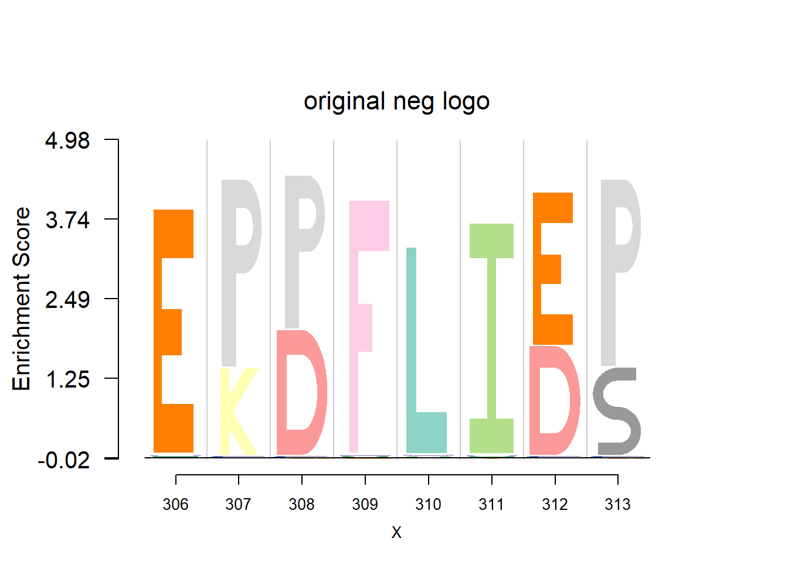
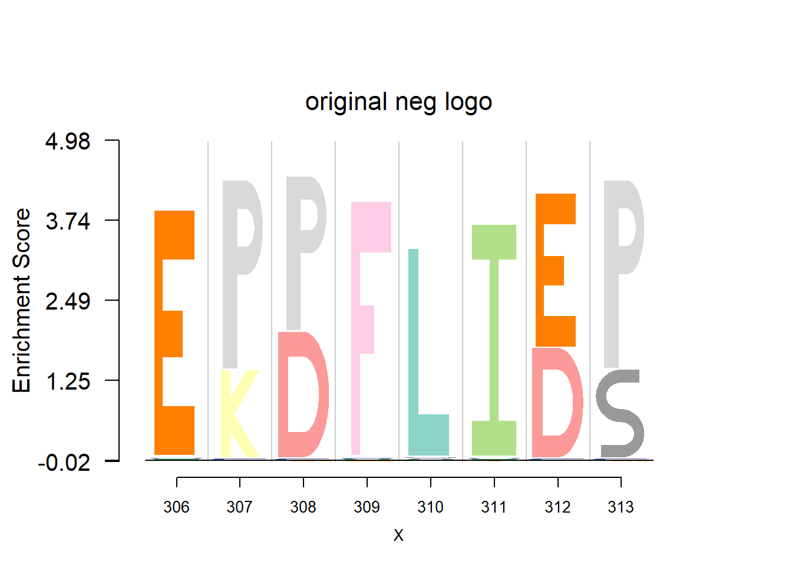

Logo plot for protein sequence
Dongyue Xie
2017-08-04
Last updated: 2017-08-07
Code version: 3847bbf
Another application of logo plot is for the protein seqeunce motif. Portein is composed of 20 amino acid.
Data are from the 3FDB. The data in ‘weighted observed percentages rounded down’ are simply the sample proportion. Here, we firstly transform it back to the pfm by multiplying the ‘Number of reference sequence used to generate final profile’, then apply dash to the pfm. The background frequency of the amino acid is from BLOSUM62.(See here for details)
library(Logolas)
cols1 <- c(rev(RColorBrewer::brewer.pal(12, "Paired"))[c(3,4,7,8,11,12,5,6,9,10)],
RColorBrewer::brewer.pal(12, "Set3")[c(1,2,5,8,9)],
RColorBrewer::brewer.pal(9, "Set1")[c(9,7)],
RColorBrewer::brewer.pal(8, "Dark2")[c(3,4,8)])
color_profile <- list("type" = "per_row",
"col" = cols1)
# a function to read pwm from 3FDB.
# then apply dash to the pwm.
bg=c(0.074,0.052,0.045,0.054,0.025,0.034,0.054,0.074,0.026,0.068,0.099,0.058,0.025,0.047,0.039,0.057,0.051,0.013,0.034,0.073)
readprotein=function(file,skip=3,nrows,nsites,bg=bg,adash){
library(dash)
rawdata=read.table(file = file,skip = skip,nrows = nrows)
pwm=as.matrix(rawdata[,23:42]/100)
pfm=round(pwm*nsites)
if(adash==T){
pwm=dash(as.matrix(pfm),mode = bg,optmethod = 'mixEM')$posmean
}
colnames(pwm)=c('A' ,'R','N','D', 'C' , 'Q', 'E' , 'G', 'H' , 'I', 'L' , 'K' , 'M' , 'F', 'P' , 'S' , 'T' , 'W', 'Y', 'V')
rownames(pwm)=1:nrow(pwm)
return(pwm)
}
#plot the logo plot
plotprotein=function(file,motif,original,pdash,nrows,nsites,bg){
pwm_dash=readprotein(file,nrows = nrows,nsites = nsites,adash = T,bg=bg)
pwm_ori=readprotein(file,nrows = nrows,nsites = nsites,adash =F,bg=bg)
if(original==T){
logomaker(t(pwm_ori[motif[1]:(sum(motif)-1),]),color_profile = color_profile,frame_width = 1,bg=bg,pop_name = 'original logo')
nlogomaker(t(pwm_ori[motif[1]:(sum(motif)-1),]),logoheight = 'log_odds',color_profile = color_profile,frame_width = 1,bg=bg,pop_name = 'original neg logo')
if(pdash==T){
logomaker(t(pwm_dash[motif[1]:(sum(motif)-1),]),color_profile = color_profile,frame_width = 1,bg=bg,pop_name = 'dash logo')
nlogomaker(t(pwm_dash[motif[1]:(sum(motif)-1),]),logoheight = 'log_odds',color_profile = color_profile,frame_width = 1,bg=bg,pop_name = 'dash neg logo')
}
}
}
#EX: Zona-pellucida-binding protein (Sp38) , sample size=5
plotprotein('http://caps.ncbs.res.in/cgi-bin/mini/databases/3pfdb/3pfdb_pssm_download.cgi?id=PF07354&data_dir=SDB_folder',c(82,8),T,T,272,5,bg)#EX 0: Zeta toxin , sample size = 9
plotprotein('http://caps.ncbs.res.in/cgi-bin/mini/databases/3pfdb/3pfdb_pssm_download.cgi?id=PF06414&data_dir=SDB_folder',c(1,8),T,T,227,9,bg)#EX 1:Alpha-2,8-polysialyltransferase (POLYST), sample size=19
plotprotein('http://caps.ncbs.res.in/cgi-bin/mini/databases/3pfdb/3pfdb_pssm_download.cgi?id=PF07388&data_dir=ADB_folder',c(306,8),T,T,467,19,bg) 

#EX 2: ATPase family associated with various cellular activities (AAA) , sample size=35
plotprotein('http://caps.ncbs.res.in/cgi-bin/mini/databases/3pfdb/3pfdb_pssm_download.cgi?id=PF07728&data_dir=SDB_folder',c(24,8),T,T,145,35,bg)#EX 2: A1 Propeptide, sample size = 85
plotprotein('http://caps.ncbs.res.in/cgi-bin/mini/databases/3pfdb/3pfdb_pssm_download.cgi?id=PF07966&data_dir=SDB_folder',c(19,8),T,T,29,85,bg)#EX 3: ABC 3 transport family ,samplesize=904
#error: LaplacesDemon::ddirichlet(rep(1, 2), alpha = c(sum(conc_mat[k, :
# alpha must be positive.
#plotprotein('http://caps.ncbs.res.in/cgi-bin/mini/databases/3pfdb/3pfdb_pssm_download.cgi?id=PF00950&data_dir=ADB_folder',c(22,20),T,T,50,904,bg)
#EX: Acetyl-CoA hydrolase/transferase N-terminal domain , sample size=306
plotprotein('http://caps.ncbs.res.in/cgi-bin/mini/databases/3pfdb/3pfdb_pssm_download.cgi?id=PF02550&data_dir=ADB_folder',c(148,11),T,T,176,306,bg)
Session information
sessionInfo()R version 3.4.0 (2017-04-21)
Platform: x86_64-w64-mingw32/x64 (64-bit)
Running under: Windows 10 x64 (build 15063)
Matrix products: default
locale:
[1] LC_COLLATE=English_United States.1252
[2] LC_CTYPE=English_United States.1252
[3] LC_MONETARY=English_United States.1252
[4] LC_NUMERIC=C
[5] LC_TIME=English_United States.1252
attached base packages:
[1] stats graphics grDevices utils datasets methods base
other attached packages:
[1] dash_0.99.0 SQUAREM_2016.8-2 Logolas_1.1.2
loaded via a namespace (and not attached):
[1] Rcpp_0.12.11 digest_0.6.12 rprojroot_1.2
[4] grid_3.4.0 backports_1.0.5 git2r_0.18.0
[7] magrittr_1.5 evaluate_0.10 stringi_1.1.5
[10] LaplacesDemon_16.0.1 rmarkdown_1.6 RColorBrewer_1.1-2
[13] tools_3.4.0 stringr_1.2.0 parallel_3.4.0
[16] yaml_2.1.14 compiler_3.4.0 htmltools_0.3.5
[19] knitr_1.15.1 This R Markdown site was created with workflowr